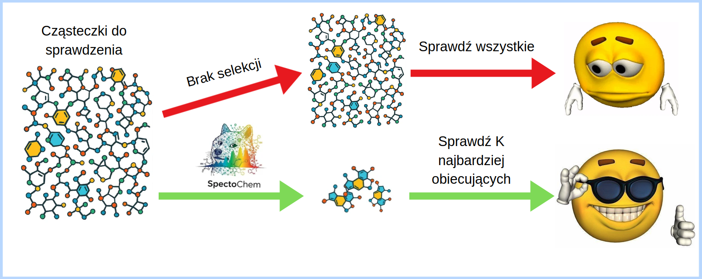
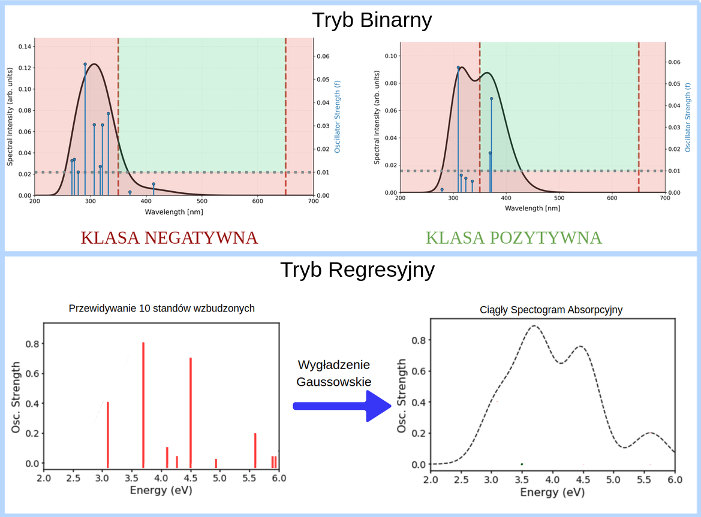
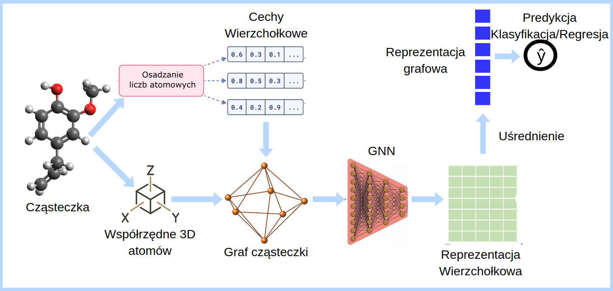
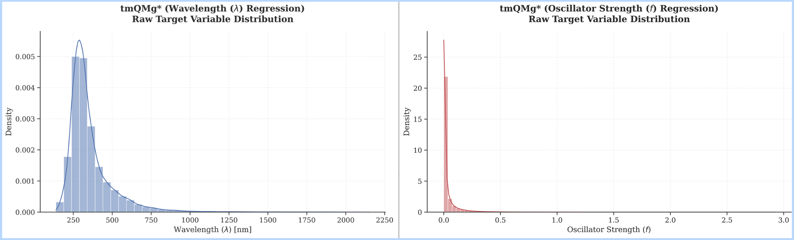

Problem
Wykrywanie fotokatalizatorów chemicznych jest jednym z kluczowych zagadnień chemii materiałowej ze względu na ich szerokie zastosowanie w takich dziedzinach jak energetyka czy ochrona środowiska. Obecne metody identyfikacji nowych fotokatalizatorów opierają się na wielogodzinnych badaniach.
W odpowiedzi na te wyzwania prezentujemy SpectoChem — system umożliwiający wykrywanie cząsteczek o właściwościach fotokatalitycznych na podstawie podstawowych cech geometrycznych ich struktury.

Dwa Poziomy Predykcji
Projekt SpectoChem zawiera modele, które pozwalają przewidywać w dwóch opcjach:
- Klasyfikacja binarna – Model zwraca binarną informację czy przekazana cząsteczka jest potencjalnym fotokatalizatorem, czy nie.
- Regresja – Model zwraca szczegółowe wartości długości fali oraz energii dla pierwszych dziesięciu stanów aktywnych cząsteczki, co pozwala na wyliczenie całego spektrum cząsteczki.

Architektura Rozwiązania
Nasze rozwiązanie składa się z trzech głównych komponentów:
- Grafowa reprezentacja cząsteczki – Przekształcenie cząsteczki w graf na podstawie jej struktury geometrycznej, wzbogacony o informacje o liczbach atomowych.
- Grafowa sieć neuronowa – Wykorzystanie architektury grafowych sieci neuronowych (GNN) do wyznaczenia reprezentacji na poziomie atomów.
- Predykcja właściwości – Agregacja reprezentacji atomowych do poziomu cząsteczki, a następnie wykorzystanie głowicy predykcyjnej do przewidywania jej właściwości.

Eksperymenty i Dane
Eksperymenty przeprowadzono na zbiorze tmQMg*, zawierającym informacje o stanach energetycznych dla ponad 74 tysięcy cząsteczek kompleksów metali przejściowych. Zbiór ten został wygenerowany z wykorzystaniem metod chemii kwantowej i stanowi jedno z największych publicznie dostępnych źródeł danych dla tego typu związków.

Wyniki
Spośród wszystkich analizowanych architektur najwyższą skuteczność osiągnął model wykorzystujący SchNet jako grafową sieć neuronową. Wynik ten potwierdza efektywność architektur uwzględniających informacje geometryczne o strukturze cząsteczki.
Klasyfikacja Binarna (F1 score ↑)
| Model | Train & Test: Block 3 | Test Only: Block 3 |
|---|---|---|
| SchNet | 0.783 ± 0.013 | 0.657 ± 0.010 |
| GCN | 0.660 ± 0.019 | 0.521 ± 0.063 |
| GAT | 0.669 ± 0.013 | 0.521 ± 0.008 |
| GINE | 0.441 ± 0.363 | 0.576 ± 0.033 |
Regresja (Metryki spektralne ↓)
| Model | Train & Test: Block 3 | Test Only: Block 3 | ||
|---|---|---|---|---|
| JSD | SMSE (10-7) | JSD | SMSE (10-7) | |
| SchNet | 0.087 ± 0.002 | 1.301 ± 0.024 | 0.221 ± 0.006 | 2.700 ± 0.060 |
| GCN | 0.145 ± 0.005 | 1.934 ± 0.058 | 0.240 ± 0.014 | 3.118 ± 0.194 |
| GAT | 0.143 ± 0.004 | 1.897 ± 0.046 | 0.269 ± 0.037 | 3.307 ± 0.285 |
| GINE | 0.158 ± 0.002 | 2.068 ± 0.041 | 0.247 ± 0.003 | 3.011 ± 0.049 |
Efekty projektu
- Przygotowanie publikacji – Learning Light: Predicting UV-Vis Spectra of Transition Metal Complexes with Machine Learning w celu zgłoszenia do czasopisma Journal of Chemical Theory and Computation.
- Aplikacja – umożliwiająca wizualizację przewidywanych widm absorpcyjnych.
- Wagi modelu – udostępnione na platformie Hugging Face.
- Repozytorium – zawierające kod źródłowy projektu.
Interaktywna Aplikacja
Wypróbuj naszą aplikację stworzoną do wizualizacji i analizy właściwości cząsteczek fotokatalitycznych.
Podsumowanie
Przeprowadzone eksperymenty pokazują, że zaproponowana metoda skutecznie przewiduje właściwości fotokatalityczne cząsteczek i stanowi obiecujące narzędzie wspomagające odkrywanie nowych materiałów, wymagające jednak dalszej walidacji przed praktycznym wdrożeniem.